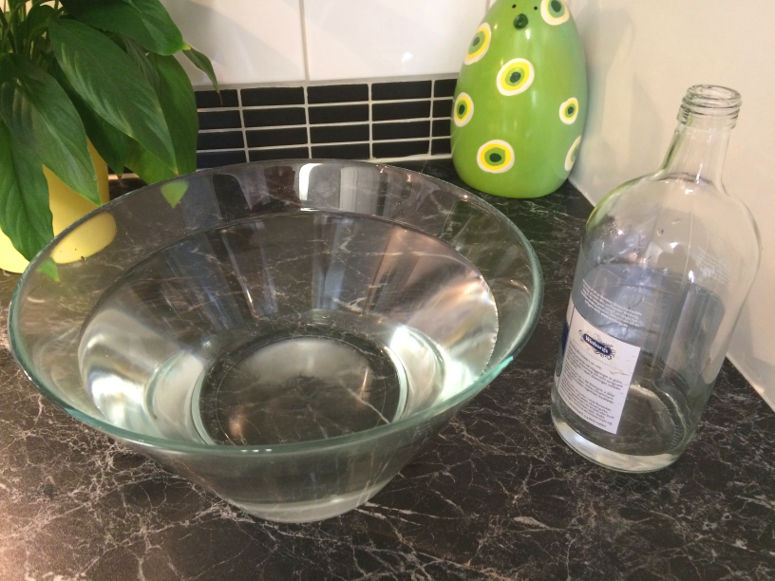
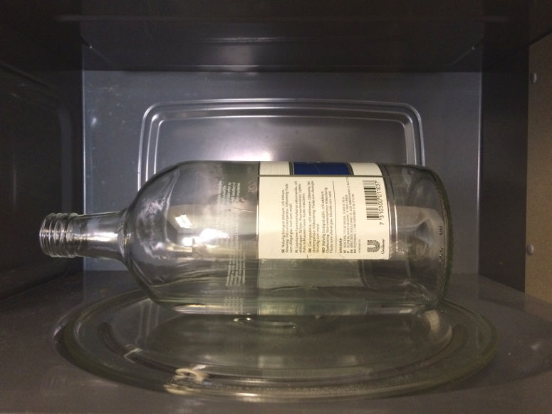
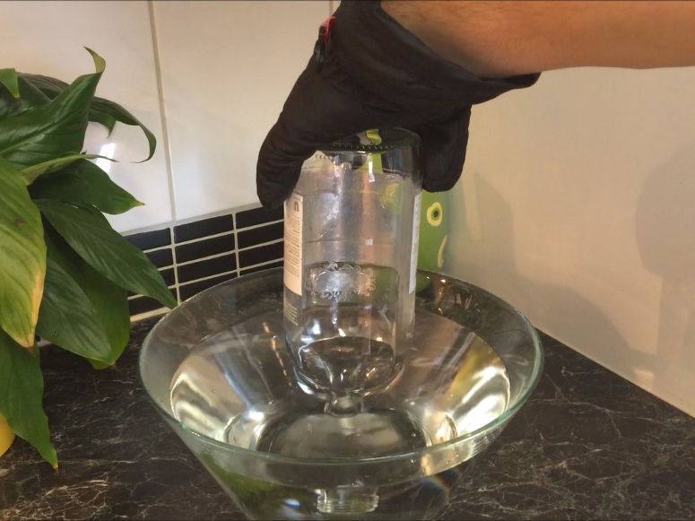
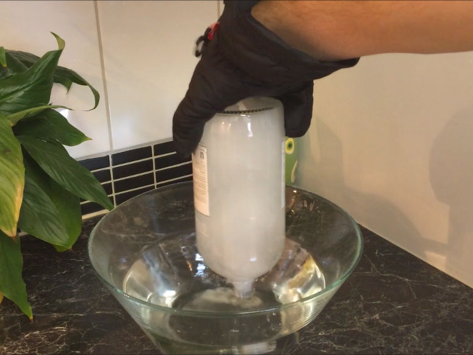

Веселые и простые научные эксперименты для детей и взрослых.
Водяная имплозия

Физика
Смотрите, как пустая бутылка внезапно наполняется водой! Это эксперимент о давлении и состояниях вещества.
| Нравится: | Поделиться: | |
Видео

Материалы
- 1 стеклянная бутылка - желательно с маленьким отверстием
- 1 большая чаша
- Микроволновая печь
- Вода
- Средства безопасности: 1 пара защитных очков, 1 пара защитных перчаток
Предупреждение!
Существуют следующие риски:- Травма из-за взрыва бутылки.
- Кто-то может обжечься о бутылку или о воде. Иногда вода нагревается до такой степени, что становится горячее 100 °C (212 °F) без кипения, и затем внезапно закипает с взрывом.
- Проводите демонстрацию в компании взрослого.
- Носите защитные очки.
- Носите защитные перчатки.
- Всегда крепко держите бутылку и всегда направляйте ее открытие от себя, начиная с момента, когда вы открываете дверь микроволновой печи, до момента, когда вы погружаете ее в воду.
- Практикуйте, что делать, если кто-то порежется.
- Практикуйте, что делать, если кто-то обожжется.
Шаг 1


Шаг 2

Шаг 3

Шаг 4

Краткое объяснение
Когда вода закипает, она превращается из жидкого состояния в газообразное (это происходит даже при комнатной температуре - но при температуре кипения это происходит гораздо быстрее). Пар, т.е. вода в газообразном состоянии, заполняет бутылку и вытесняет воздух, который был там раньше. Пар и воздух оба прозрачны, поэтому вы не увидите, как это происходит.Газ (например, воздух или водяной пар) всегда оказывает давление на окружающую среду. Это происходит потому, что частицы (атомы или молекулы), из которых состоит газ, постоянно движутся и сталкиваются друг с другом и с окружающей средой.
В момент, когда вы погружаете бутылку в воду, есть два "газовых тела", которые давят на поверхность воды в чаше. Одно - это водяной пар в бутылке, а другое - воздух в атмосфере. В момент, когда вы погружаете бутылку в воду, оба газовых тела давят одинаково на поверхность воды. Однако водяной пар в бутылке сразу же остывает. И он остывает настолько, что конденсируется в капли воды. Это означает, что внутри бутылки возникает пустота. Почти вакуум. Это означает, что газ (водяной пар), который только что был там и давил на поверхность воды, исчез. Однако газ (воздух) снаружи бутылки остается, и он все еще давит на поверхность воды. Поэтому воздух снаружи бутылки теперь толкает воду вверх в бутылку.
Легко говорить о "всасывании" в этой демонстрации, но на самом деле нет никакой "всасывающей силы" или чего-то подобного - только давление.
Ключ к успеху демонстрации заключается в том, что водяной пар не выходит из бутылки, пока у вас есть время погрузить ее в воду. Поэтому вам следует быстро погрузить бутылку в воду и выбрать бутылку с маленьким отверстием. Форма бутылки, вероятно, также играет роль, где некоторые бутылки лучше удерживают водяной пар. Также помните, что нужно погружать бутылку достаточно глубоко в воду, иначе воздух будет всасываться, когда уровень воды в чаше упадет.
Эксперимент
Вы можете превратить эту демонстрацию в эксперимент. Это сделает его лучшим научным проектом. Для этого попробуйте ответить на один из следующих вопросов. Ответ на вопрос будет вашей гипотезой. Затем протестируйте гипотезу, проведя эксперимент.- Что произойдет, если вы подождете некоторое время, прежде чем погрузить бутылку в воду?
- Что произойдет, если у вас будет горячая вода в чаше?
- Что произойдет, если вы используете бутылку с более широким отверстием?
- Какая стеклянная бутылка работает лучше всего?
- Что произойдет, если вы заполните половину бутылки водой?
- Что произойдет, если вы позволите открытию бутылки просто касаться поверхности воды?
| Нравится: | Поделиться: | |
Содержимое веб-сайта
© Архив экспериментов. Веселые и простые научные эксперименты для детей и взрослых. В биологии, химии, физике, землеведении, астрономии, технологии, огне, воздухе и воде. Для выполнения в детском саду, школе, после школы и дома. Также научные проекты и руководство для учителей.
Наверх
© Архив экспериментов. Веселые и простые научные эксперименты для детей и взрослых. В биологии, химии, физике, землеведении, астрономии, технологии, огне, воздухе и воде. Для выполнения в детском саду, школе, после школы и дома. Также научные проекты и руководство для учителей.
Наверх